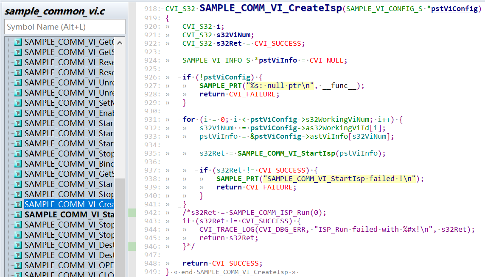
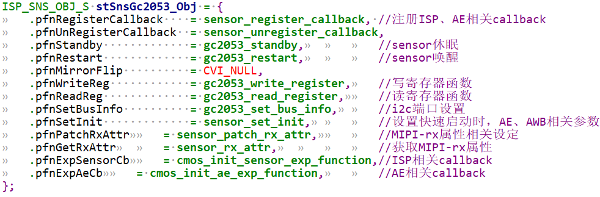
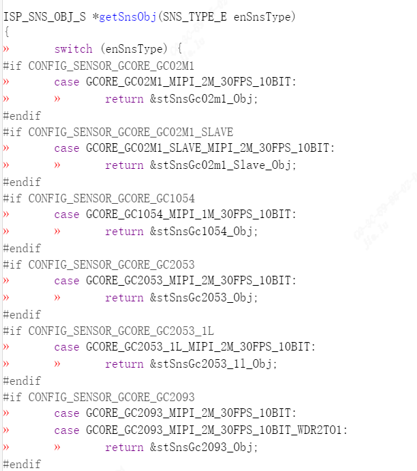
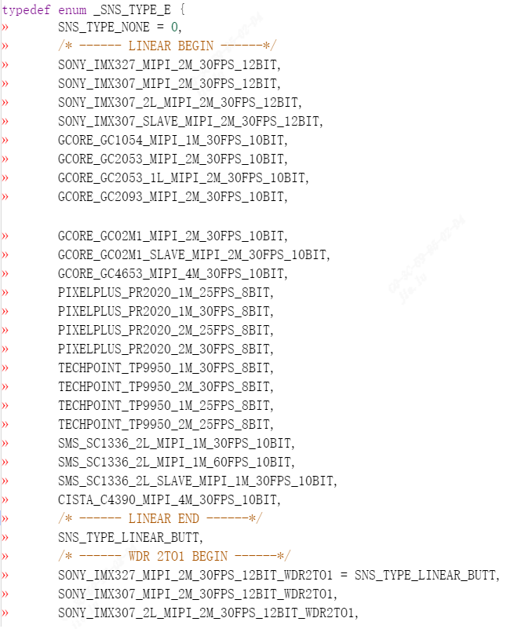
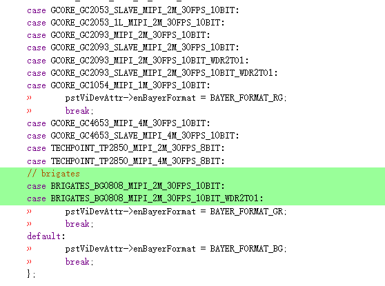
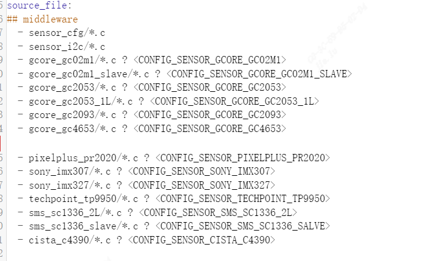
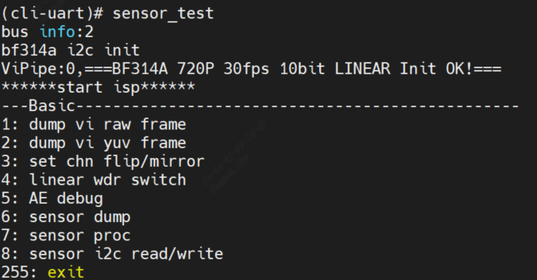

4. Image Output Debugging(Linuxthe corresponding content)¶
4.1. Hardwarethe corresponding content¶
verifySensorthe corresponding content.
verifySensor Reset GPIOthe corresponding content.
verifySensorInputthe corresponding content(the corresponding contentProcessorthe corresponding content)
verifyI2Cthe corresponding contentSensorthe corresponding content.
the corresponding contentcallFile Systemthe corresponding contentdefaultthe corresponding contenti2c_read/i2c_writeCommandVerification.
4.2. ConfigurationInitializethe corresponding content¶
ConfigurationInitializethe corresponding contentrecommendthe corresponding contentVersionreleasethe corresponding contentsensorDriver。
the corresponding contentsensor bringuprecommendthe corresponding contentAEthe corresponding contentRelatedthe corresponding contentcallbacksthe corresponding content。
modifysample_common_vi.c，the corresponding contentSAMPLE_COMM_ISP_Runcall。
{kind=link}

modifyxxx_cmos_ctrl.cthe corresponding contentinitfunction，the corresponding contentxxx_default_reg_initcall。

the corresponding contentsensorAdaptationthe corresponding contentdisplaythe corresponding contentImagethe corresponding content，the corresponding contentOpenthe corresponding content。
4.2.1. the corresponding contentSensorDriver¶
the corresponding contentSensorthe corresponding content、the corresponding contentResolutionthe corresponding contentWDRmodeselectreleasethe corresponding contentsensorDriverthe corresponding contentmodifythe corresponding contentsensorthe corresponding content。
the corresponding contentcomponent/isp/user/sensor/cv18xx/xxxxthe corresponding contentxxxx_cmos.c、xxxx_cmos_ex.h、xxxx_cmos_param.hthe corresponding contentxxxx_sensor_ctl.c
modifyxxxx_sensor_ctl.cthe corresponding contentI2C Configurationthe corresponding contenti2c_addr, addr_bytethe corresponding contentdata_byte
const CVI_U8 imx327_i2c_addr = 0x1A;
const CVI_U32 imx327_addr_byte = 2;
const CVI_U32 imx327_data_byte = 1;
the corresponding contentsensorInterfacethe corresponding content, modifyxxxx_cmos_param.hthe corresponding contentxxxx_rx_attrthe corresponding contentpfnGetRxAttr, Setmipi-rxthe corresponding content。

.Input_mode:SetInputmodeYesmipithe corresponding contentYesbt656the corresponding content。
.Mac_clk: macthe corresponding contentFrequency
.raw_date_type:datathe corresponding content
.lane id:mipiDatalane、the corresponding contentlanethe corresponding contentIDConfiguration
.cam: mclk ID
.freq: SOCthe corresponding contentsensorthe corresponding contentInputthe corresponding content
.devno:mipirxthe corresponding contentNumber，sensor ID
the corresponding contentsensorOutputmode, modifyxxxx_cmos_param.hthe corresponding contentg_astxxx_mode.
static const IMX327_MODE_S g_astImx327_mode[IMX327_MODE_NUM] = {
[IMX327_MODE_1080P30] = {
.name = "1080p30",
.astImg[0] = {
.stSnsSize = {
.u32Width = 1948,
.u32Height = 1097,
},
.stWndRect = {
.s32X = 12,
.s32Y = 8,
.u32Width = 1920,
.u32Height = 1080,
},
.stMaxSize = {
.u32Width = 1948,
.u32Height = 1097,
},
},
.f32MaxFps = 30,
.f32MinFps = 0.119,
.u32HtsDef = 0x1130,
.u32VtsDef = 1125,
.stExp[0] = {
.u16Min = 1,
.u16Max = 1123,
.u16Def = 400,
.u16Step = 1,
},
.stAgain[0] = {
.u16Min = 1024,
.u16Max = 62416,
.u16Def = 1024,
.u16Step = 1,
},.stDgain[0] = {
.u16Min = 1024,
.u16Max = 38485,
.u16Def = 1024,
.u16Step = 1,
},
.u16RHS1 = 11,
.u16BRL = 1109,
.u16OpbSize = 10,
.u16MarginVtop = 8,
.u16MarginVbot = 9,
},
}
modifypfn_cmos_set_image_mode, the corresponding contentFramethe corresponding contentsensormode.
the corresponding contentinit sequencethe corresponding contentOutputmodethe corresponding contentYesthe corresponding contentResolution，the corresponding contentYesall pixel scanmode。
the corresponding contentneedthe corresponding contentsensorthe corresponding contentdatathe corresponding content，the corresponding contentneedAdaptationthe corresponding contentwindow crop mode，the corresponding contentsensorthe corresponding content
the corresponding contentcrop modethe corresponding contentinit sequence，orthe corresponding contentsensor specthe corresponding contentmodify。
4.2.2. SensorInitializethe corresponding content¶
the corresponding contentxxxx_sensor_ctrl.cthe corresponding contentsensormodethe corresponding contentpfn_cmos_sensor_init.
the corresponding contentxxxx_sensor_ctrl.c the corresponding contentxxxx_default_reg_initthe corresponding content.
the corresponding contentsensor object
{kind=link}

4.3. Adaptationsample common the corresponding content alios config¶
the corresponding contentsensor object externthe corresponding content
build/media/sensor/sensor_cfg/sensor_cfg.c
the corresponding contentgetSnsObj(SNS_TYPE_E enSnsType) functionthe corresponding content。
{kind=link}

the corresponding content_SNS_TYPE_Ethe corresponding content
build/media/sensor/sensor_cfg/sensor_cfg.h
the corresponding content_SNS_TYPE_E the corresponding contentlistthe corresponding content，linearthe corresponding content，WDRthe corresponding content。
{kind=link}

sample_common_vi.cthe corresponding contentSAMPLE_COMM_VI_GetDevAttrBySns、
SAMPLE_COMM_VI_GetSizeBySensorthe corresponding contentcase。
{kind=link}


the corresponding contentcvi_alios/components/cvi_mmf_sdk/cvi_sensor/package.yamlthe corresponding contentsensor driverContentsthe corresponding contentFileinformation

{kind=link}

the corresponding contentLinuxthe corresponding content，sensorConfigurationusethe corresponding contentInterfacethe corresponding contentas follows，the corresponding contentsample：
CVI_S32 CVI_SNS_GPIO_Init(VI_PIPE ViPipe, SNS_I2C_GPIO_INFO_S *pstGpioCfg);
Configurationthe corresponding contentsensorthe corresponding contentreset GPIOinformation，SNS_I2C_GPIO_INFO_Sthe corresponding contentas follows：
typedef struct _SNS_I2C_GPIO_INFO_S {
CVI_S8 s8I2cDev;
CVI_S32 s32I2cAddr;
CVI_U32 u32Rst_port_idx;
CVI_U32 u32Rst_pin;
CVI_U32 u32Rst_pol;
} SNS_I2C_GPIO_INFO_S;
CVI_S32 CVI_SNS_GetAhdStatus(VI_PIPE ViPipe, SNS_AHD_MODE_S *pstStatus);
GetAHD Sensorthe corresponding contentstatus，the corresponding contentAHD sensor， SNS_AHD_MODE_Sthe corresponding contentas follows：
typedef enum _SNS_AHD_MODE_E {
AHD_MODE_NONE,
AHD_MODE_1280X720H_NTSC,
AHD_MODE_1280X720H_PAL,
AHD_MODE_1280X720P25,
AHD_MODE_1280X720P30,
AHD_MODE_1280X720P50,
AHD_MODE_1280X720P60,
AHD_MODE_1920X1080P25,
AHD_MODE_1920X1080P30,
AHD_MODE_2304X1296P25,
AHD_MODE_2304X1296P30,
AHD_MODE_BUIsensor_cfg.h } SNS_AHD_MODE_S;
CVI_S32 CVI_SNS_SetSnsType(VI_PIPE ViPipe, CVI_U32 SnsType);
Setthe corresponding contentPIPEthe corresponding contentsensor ID，the corresponding contentmethodneedthe corresponding contentcallOthermethodthe corresponding contentcall， SnsTypecanthe corresponding contentsensor_cfg.h
CVI_S32 CVI_SNS_SetSnsRxAttr(VI_PIPE ViPipe, RX_INIT_ATTR_S *pstRxAttr);
Setthe corresponding contentsensorthe corresponding contentRXConfiguration， RX_INIT_ATTR_Sthe corresponding contentcvi_sns_ctrl.h
CVI_S32 CVI_SNS_SetSnsI2c(VI_PIPE ViPipe, CVI_S32 astI2cDev, CVI_S32 s32I2cAddr);
Setthe corresponding contentsensorthe corresponding contentI2Cthe corresponding contentAddress
CVI_S32 CVI_SNS_SetSnsIspAttr(VI_PIPE ViPipe, ISP_INIT_ATTR_S *pstInitAttr);
Setsensorthe corresponding contentISPthe corresponding contentConfiguration，ISP_INIT_ATTR_Sthe corresponding contentcvi_sns_ctrl.h
CVI_S32 CVI_SNS_RegCallback(VI_PIPE ViPipe, ISP_DEV IspDev);
Setsensorthe corresponding contentISPthe corresponding contentcallback
CVI_S32 CVI_SNS_UnRegCallback(VI_PIPE ViPipe, ISP_DEV IspDev);
the corresponding contentsensorthe corresponding contentISPthe corresponding contentcallback
CVI_S32 CVI_SNS_SetSnsImgMode(VI_PIPE ViPipe, ISP_CMOS_SENSOR_IMAGE_MODE_S *stSnsrMode);
Setsensorthe corresponding contentmode，Includesfps，sizethe corresponding content，ISP_CMOS_SENSOR_IMAGE_MODE_Sthe corresponding contentcvi_comm_sns.h
CVI_S32 CVI_SNS_SetSnsWdrMode(VI_PIPE ViPipe, WDR_MODE_E wdrMode);
Setsensorthe corresponding contentWDR mode，WDR_MODE_Ethe corresponding contentcvi_comm_cif.h
CVI_S32 CVI_SNS_GetSnsRxAttr(VI_PIPE ViPipe, SNS_COMBO_DEV_ATTR_S *stDevAttr);
Getsensorthe corresponding contentRXConfiguration，SNS_COMBO_DEV_ATTR_Sthe corresponding contentcvi_comm_cif.h
CVI_S32 CVI_SNS_SetSnsProbe(VI_PIPE ViPipe);
Setthe corresponding contentPIPEthe corresponding contentsensorthe corresponding contentprobe
CVI_S32 CVI_SNS_SetSnsGpioInit(CVI_U32 devNo, CVI_U32 u32Rst_port_idx, CVI_U32 u32Rst_pin, CVI_U32 u32Rst_pol);
Configurationthe corresponding contentsensorthe corresponding contentreset GPIOinformation，u32Rst_port_idx， u32Rst_pin，u32Rst_polthe corresponding contentiniConfigurationContent
CVI_S32 CVI_SNS_RstSnsGpio(CVI_U32 devNo, CVI_U32 rstEnable);
the corresponding contentsensorthe corresponding contentrstthe corresponding contentvalidthe corresponding content
CVI_S32 CVI_SNS_RstMipi(CVI_U32 devNo, CVI_U32 rstEnable);
resetthe corresponding contentsensorusethe corresponding contentMIPI
CVI_S32 CVI_SNS_SetMipiAttr(VI_PIPE ViPipe, CVI_U32 SnsType);
the corresponding contentsensorthe corresponding contentRXConfigurationthe corresponding contentCIF
CVI_S32 CVI_SNS_EnableSnsClk(CVI_U32 devNo, CVI_U32 clkEnable);
enable sensorthe corresponding contentmclk
CVI_S32 CVI_SNS_SetSnsStandby(VI_PIPE ViPipe);
Setsensorthe corresponding contentstandbystatus
CVI_S32 CVI_SNS_SetSnsInit(VI_PIPE ViPipe);
Setsensorthe corresponding contentinit
CVI_S32 CVI_SNS_SetVIFlipMirrorCB(VI_PIPE ViPipe, VI_DEV ViDev);
the corresponding contentsensorthe corresponding contentmirrorthe corresponding contentflipthe corresponding contentVIthe corresponding content
the corresponding contentmethodthe corresponding contentISPuse，usethe corresponding contentISPRelateddocumentationview
CVI_S32 CVI_SNS_GetAeDefault(VI_PIPE ViPipe, AE_SENSOR_DEFAULT_S *stAeDefault);
Getthe corresponding contentsensorthe corresponding contentAE defaultstatus
CVI_S32 CVI_SNS_GetIspBlkLev(VI_PIPE ViPipe, ISP_CMOS_BLACK_LEVEL_S *stBlc);
Getthe corresponding contentsensorthe corresponding contentBLKthe corresponding content， ISP_CMOS_BLACK_LEVEL_Sthe corresponding contentcvi_comm_sns.h
CVI_S32 CVI_SNS_SetSnsFps(VI_PIPE ViPipe, CVI_U8 fps, AE_SENSOR_DEFAULT_S *stSnsDft);
Setsensorthe corresponding contentOutputFPS
CVI_S32 CVI_SNS_GetExpRatio(VI_PIPE ViPipe, SNS_EXP_MAX_S *stExpMax);
Getsensorthe corresponding contentExposurerange
CVI_S32 CVI_SNS_SetDgainCalc(VI_PIPE ViPipe, SNS_GAIN_S *stDgain);
Setsensorthe corresponding contentGainthe corresponding content
CVI_S32 CVI_SNS_SetAgainCalc(VI_PIPE ViPipe, SNS_GAIN_S *stAgain);
Setsensorthe corresponding contentGainthe corresponding content
4.4. the corresponding contentSetsensor driver¶
CV184Xthe corresponding contentInterfacethe corresponding contentSetsensor driver，the corresponding contentInterfacethe corresponding contentusethe corresponding contentsensorthe corresponding contentmode，the corresponding contentInitializethe corresponding contentMIPISetGetthe corresponding content；the corresponding contentneedUserControlsensorthe corresponding contentInitialize，the corresponding contentISP，probethe corresponding contentoperation。
CVI_S32 CVI_SNS_ParseIni(SENSOR_CFG_S *sensor_cfg);
the corresponding contentsensor_cfg.iniConfigurationFileGetsensor_cfgConfiguration
CVI_S32 CVI_SNS_GetConfigInfo(SENSOR_CFG_S *sensor_cfg);
the corresponding contentsensor_cfgConfigurationthe corresponding contentGetsensorthe corresponding contentConfigurationinformation
CVI_S32 CVI_SNS_SetSnsDrvCfg(SENSOR_CFG_S *sensor_cfg);
the corresponding contentsensor_cfgConfigurationSetsensor driver
the corresponding contentapplicationthe corresponding contentcallthe corresponding content，the corresponding contentreturnSuccessafterward，the corresponding contentneedthe corresponding contentImageSizethe corresponding contentinformationthe corresponding contentsensor_cfgthe corresponding content，the corresponding contentapplicationcanthe corresponding contentneedConfigurationuse。
4.5. the corresponding contentsensor ini cfgConfiguration¶
Sensorthe corresponding contentcanthroughthe corresponding contentinithe corresponding contentmodifyConfiguration，the corresponding contentlanethe corresponding content、I2CportsensorOutputmodethe corresponding content。
defaultthe corresponding contentmiddlewarethe corresponding contentflowthe corresponding content/mnt/data/sensor_ini.cfgthe corresponding contentReadsensorthe corresponding contentConfigurationFile，ifthe corresponding contentContentsthe corresponding contentConfigurationFile，the corresponding contentusethe corresponding content。
the corresponding contentSC1336the corresponding contentdisplaythe corresponding contentsensor_cfg.iniContent:
[source]
;type = SOURCE_USER_FE
dev_num = 1
; section for sensor
[sensor]
; sensor name
name = 0x000A0030
bus_id = 3
mipi_dev = 0
lane_id = 2, 3, 1, -1, -1
pn_swap = 1, 1, 1, 0, 0
mclk_en = 1
mclk = 0
port = 0
pin = 2
pol = 1
fps = 60
name：sensorthe corresponding contentRunmode，0x000A0030the corresponding contentTableSMS_SC1336_1L_MIPI_1M_30FPS_10BIT
name the corresponding contentbuild/media/cvi_sensor/sensor_cfg/sensor_cfg.h，wherethe corresponding contentsensorSupportedlist；namethe corresponding contentas followsTable：

Bus_id:Tablethe corresponding contentI2Cportthe corresponding content
Mipi_dev:Tablethe corresponding contentmipi-rx
Lane_id:Tablethe corresponding contentmipithe corresponding contentConfiguration
pn_swap:Tablethe corresponding contentmipithe corresponding contentP/NYesNoneedthe corresponding content
Pn_swap:Tablethe corresponding contentP/Nthe corresponding content，the corresponding contentneedthe corresponding content0，needthe corresponding contentConfigurationthe corresponding content1
Mclk:Tablethe corresponding contentmclkthe corresponding content
Mclk_en:Tablethe corresponding contentEnabledthe corresponding contentmclkOutput
hw_sync：dual sensorFramethe corresponding content，hw_sync=1Tablethe corresponding contentslave sensor sync with master sensor
sns_i2c_addr：sensorthe corresponding contenti2c DeviceAddress
port：sensor RSTthe corresponding contentProcessorthe corresponding contentGPIOusethe corresponding contentportthe corresponding content A/B/C - 0/1/2
pin：sensor RSTthe corresponding contentProcessorthe corresponding contentGPIOusethe corresponding contentportthe corresponding contentNumber
pol：sensor RSTthe corresponding contentvalidthe corresponding content
- the corresponding contentParameter Configurationas follows：
enum of_gpio_flags {
OF_GPIO_ACTIVE_LOW = 0x1,
OF_GPIO_SINGLE_ENDED = 0x2,
OF_GPIO_OPEN_DRAIN = 0x4,
OF_GPIO_TRANSITORY = 0x8,
OF_GPIO_PULL_UP = 0x10,
OF_GPIO_PULL_DOWN = 0x20,
};
fps：sensor the corresponding contentOutputfps，defaultthe corresponding content25，OtherfpsneedSetthe corresponding contentfpsthe corresponding content
4.6. the corresponding contentRunsensor_test¶
the corresponding contentConfigurationthe corresponding content，the corresponding contentSDKthe corresponding contentContentsthe corresponding content make peripherals_test the corresponding content，the corresponding contentBurningthe corresponding contentboard side；
Burningstartthe corresponding content，LinuxSerial Portthe corresponding contentsample_sensor
{kind=link}

the corresponding contentalios Serial PortInput proc/vi_dbg viewvi_dbginformation，Framethe corresponding contentdisplaynormalthe corresponding contentTablethe corresponding contentsensorthe corresponding contentnormalthe corresponding contentFigure